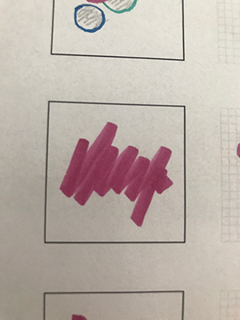
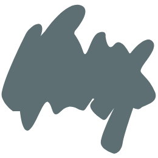
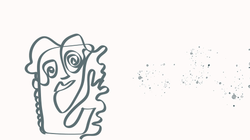

I løbet af 2. uge blev vi introduceret for emnet grundlæggende Web. Her blev vi blandt andet præsenteret for de grundlæggende faglige begreber inden for design af digitale grænseflader, vi lærte om digital indholdsproduktion, digital kommunikation samt hvad begrebet responsivt webdesign indebærer samt herunder prøvede kræfterne af med at sætte vores egen webside op i html og css efter en given stilart.
Under det første tema lærte vi også om stilarter og hvad et Styletile indeholder og hvilken funktion den har. Et Styletile indeholder nemlig de fonte/skrifttyper, som skal indgå i ens site samt farvepalette. UI-elementer indgår også i et Styletile, så man ved, hvordan f.eks. ens menu samt knapper skal se ud. Derudover er der også billeder der repræsenterer udtryk, som man ønsker at ens billeder på siden skal have. Et styletile adskiller sig fra et moodboard, da et moodboard kommer før styletilet i den kreative process og er en slide med en samling af billeder og evt. få sætninger der understøtter tonen i moodboardet.
I sammenhæng med dette forløb lærte vi også vigtigheden af stilarter og forståelsen af disse. Stilarten jeg fik var minimalisme og det var den stilart, jeg skulle lave min hjemmeside udfra. Mit styletile kan ses her (åben link i ny fane).
Da den minimalistiske farvepalette oftest er begrænset eller monochrome valgte jeg derfor en farveskala til min hjemmeside, som er dæmpet og i samma farveskala. Der er ofte nogle bestemte elementer der skiller sig ud for at skabe et kraftfuldt udtryk og derfor valgte jeg også at lave et splashbillede som er abstrakt, men stadig enkelt og som har den samme farve, som indgår i farverne på resten af hjemmesiden. Jeg har valgt to forskellige fonte til siden, hvor den ene er Sans Serif og den anden er Serif. De er begge meget enkle i sit udtryk og kombinationen af disse hjælper med at gøre udtrykket mere interessant end hvis jeg havde valgt den samme font til hele siden.
De fleste hjemmesider har et favicon til deres side og det skulle vi dermed også skabe til vores site. Et favicon er nemlig det lille ikon, som oftest er placeres til venstre for adressefeltet oppe i webbrowseren. Faviconet kan være et brands logo eller et billede som indikerer, at man er inde på den specifikke billede og skal dermed passe til det resterende indhold som findes på siden.
Først lavede vi skitser i hånden og derefter blev den bedste skitste udvalgt, som vi derefter lavede i XD. Da et favicon er meget småt, skal det dermed også være tydeligt for brugeren at se. Mit endelige favicon illustrerer en maler-plet i en farve, som også indgår i min farvepalette fra mit styletile. Jeg valgte at gå med farvepaletten da jeg mener, at den illustrerer godt, hvad den resterende hjemmeside handler om. For at indsætte ens favicon på sin hjemmeside, eksporterer man sit billede til en png, som man derefter linker til oppe i head i sin html-kode. På billederne nedenunder ses min skitse, som jeg endte med at vælge og udarbejde i XD samt resultatet af mit favicon i XD og dermed mit endelige favicon.
 Et splashbillede skal gerne vise, ligesom faviconet, hvad den pågældende hjemmeside handler om og give et tydeligt billede af, hvad den besøgende kan forvente sig at finde på siden. Da jeg havde fået stilarten minimalisme, og skrev om akvarel, valgte jeg at tegne et abstrakt billede og tilføjede elementer der gerne skulle minde en om vandfarver. Mit splashbillede afviger udseendesmæssigt fra det resterende indhold på hjemmesiden da det er en abstrakt illustration og resten af indholdet er billeder. Jeg ønskede, at skabe et kraftfuldt element, som gør brugeren nysgerrig på, hvad der findes på den resterende side. Mit splashbillede blev derefter eksporteret til en jpg-fil og kodet ind som baggrundsbillede i min css-kode.
Her kan man se min endelige hjemmeside. Dog kan jeg se nu, at jeg desværre ikke helt har fuldført den påkrævede responsivitet for diverse skærmstørrelser. Dette kan man se, når man laver skærmen til mobilstørrelse og jeg kan også se de i min CSS, da jeg mangler at tilføje media queries.
Når man laver en hjemmeside er det nemlig vigtigt, at den er responsiv, da man oftest bruger forskellige devices med forskellig størrelse skærm. 'Mobile first' er et udtryk, som er blevet sagt meget, da det er en vigtig skærmstørrelse fordi de fleste bruger mobilen mere end computeren, når de surfer rundt på nettet.
Når man koder en hjemmeside koder man den som standard til en computerskærm og derfor bliver man nødt til at lave ændringer for indholdet, når skærmen bliver mindre. Det gør man ved at kode i css og lave media queries for diverse størrelser, som man ønsker at ens side skal tilpasse sig. Denne media query viser f.eks. at ens css-kode vil blive tilføjet når ens browser vindue bredde er ligmed eller under 750px:
@media (max-width: 750px {den ønskede css-kode for den givene broswer-størrelse}
Da dette var det første tema, hvor vi lærte at kode byggede vi gradvist siden op ved at tilføje flere og flere properties på hen af vejen. I 3. sektion på siden kan man se, at jeg benytter mig af grids for at få indholdet op ved siden af hinanden. Dette er muligt ved at sætte grid-template-columns på '1fr 1fr, da dette gør at indholdet sidestilles lodret på siden.
Indenfor den minimalistiske stil gør man brug af få elementer/illustrationer, som skal styre brugeren til det man ønsker, at der skal fokuseres på. Derfor valgte jeg, at benytte mig af den varme, sandfavede farve til diverse overskrifter, section overskrifter samt mellemrubrikker, da de markerer tydeligt, men stadig uden at skabe for meget larm, at der kommer et nyt afsnit. For at ikke gøre kontrasten for stor mellem brødteksten og de andre overskrifter, valgte jeg en støvet grå farve, som er behagelig for øjet at læse og som samtidigt passer ind i den minimalistiske stil. I billederne, som indgår i hjemmesiden har jeg forsøgt at ramme samme farve / toneskala som resten af hjemmesiden, så der opstår en helhed på hjemmesiden. På alle mine sections tilføjede jeg max-width:1200px i min CSS, hvilket gør, at bredden på mit indhold ikke er større/bredere end 1200px, så indholdet bliver mere centreret på siden.